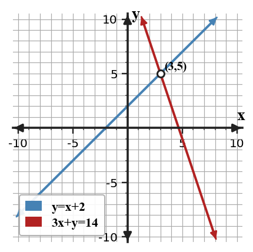
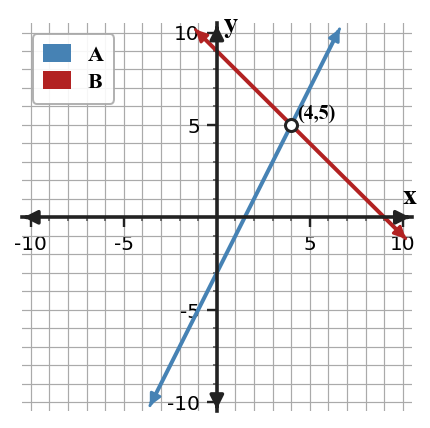
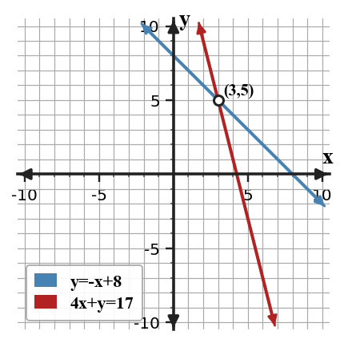

Mathematical idea: Substitution works because an expression equal to a variable can stand in for that variable anywhere it appears.
Today you will choose a useful substitution, solve the resulting one-variable equation, and interpret the ordered pair. You will also compare when substitution is more efficient than another method.
Learning Target: Students will solve systems using substitution and choose efficient forms for solving.
I can statements
This is a long-range preview for future lessons. Do not solve it today. Instead, annotate it individually. Circle anything familiar, underline symbols or directions that seem important, and write notes about what information you think will be needed later.
As you annotate, ask yourself: What parts (words, symbols, graphs) do you KNOW? What parts look FAMILIAR? What parts look like jibberish?
Create a system of two linear equations that has solution $(4,3)$ and is efficient to solve by substitution because one equation is already solved for $y$.
Directions
Read the introduction aloud with a partner or in a small group. As you read, annotate the text by highlighting important ideas, circling key vocabulary, and writing short notes about connections, questions, or predictions in the margins.
Paragraph A. Substitution begins by looking for a variable that is already alone or easy to isolate. If a system includes $y=3x-4$, then the expression $3x-4$ can replace $y$ in the other equation. This keeps the two constraints connected while using only one variable.
Paragraph B. The goal is not just to move symbols around. After you replace one variable expression in the other equation, the new equation has one variable instead of two. Solving that equation gives one coordinate of the solution.
Paragraph C. Some systems almost invite substitution because one equation is already written as $x=$ or $y=$. Other systems can still be solved by substitution, but they may create fractions or extra steps. A careful solver notices the structure before choosing a method.
Paragraph D. The ordered pair still has the same meaning it had when solving by graphing. It is the point where both equations are true, and it can be checked by substituting into both original equations.
Paragraph E. In context, substitution often means one quantity is written in terms of another. For example, one equation may describe a total, while the other gives the value of one part based on the other part.
Stop and Discuss
When $y=x+2$, every $y$ in the second equation can be replaced by $x+2$.
$$\begin{aligned}y&=x+2\\3x+y&=14\\3x+(x+2)&=14\end{aligned}$$| Representation | Evidence |
|---|---|
| Equation | $3x+(x+2)=14$ |
| Solution | $x=3$, so $y=5$ |
| Ordered pair | $(3,5)$ |

The graph shows the same result: both constraints are true at $(3,5)$.
Consider the system $y=4x-7$ and $5x+y=23$.
Consider the system $x=2y-5$ and $3x+y=29$.
Stop and Discuss
After substitution, solve the one-variable equation before finding the second coordinate.
$$\begin{aligned}y&=2x-3\\x+y&=9\\x+(2x-3)&=9\\3x-3&=9\\x&=4\end{aligned}$$| Use $x=4$ in... | Result |
|---|---|
| $y=2x-3$ | $y=5$ |
| $x+y=9$ | $4+5=9$ |

The ordered pair is $(4,5)$ because both original equations are true.
Solve the system by substitution.
$$\begin{aligned}y&=x+6\\2x+y&=18\end{aligned}$$Solve the system by substitution.
$$\begin{aligned}y&=3x-2\\x+y&=18\end{aligned}$$Stop and Discuss
A system is shown below.
$$\begin{aligned}x&=2y+1\\x+3y&=21\end{aligned}$$A system is shown below.
$$\begin{aligned}y&=4x-9\\2x+y&=27\end{aligned}$$Stop and Discuss
Substitution is efficient when one equation already gives a variable or can be solved for one variable quickly.
$y=-x+8$ can replace $y$ immediately.
$4x+y=17$ can be rewritten as $y=17-4x$.
The final point must satisfy both original equations.
The ordered pair is the shared solution.

Method choice is about structure: pick the pathway that keeps the algebra clear.
For the system below, decide on a substitution plan before doing any arithmetic.
$$\begin{aligned}6x+y&=31\\y&=x+3\end{aligned}$$For the system below, choose a method and justify it before solving.
$$\begin{aligned}5x+y&=34\\y&=2x-1\end{aligned}$$Stop and Discuss
Substitution solves a system by replacing one variable with an equal expression from the other equation.
The key notation move is writing a one-variable equation, solving it, and then using an original equation to find the missing coordinate.
A common error is substituting into the same equation or forgetting to return for the second coordinate.
Strong understanding means you choose substitution when the equation structure makes it clear and then interpret the ordered pair.
Look back at the future task. Do not solve it yet. Highlight one part that makes more sense now than it did at the beginning. Circle one part that still feels unfamiliar. Write one sentence about what representation you would look at first.
In the system $y=3x-4$ and $2x+y=11$, which expression should replace $y$ during substitution?
Solve by substitution.
$$\begin{aligned}y=2x+1\\x+y=13\end{aligned}$$What is one idea about solving systems by substitution you understand better now than at the start of class? Write at least one complete sentence.
What is one thing about solving systems by substitution you still want to understand or practice? Be specific — name the idea, not just "everything."